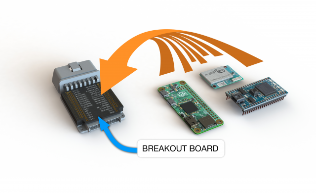
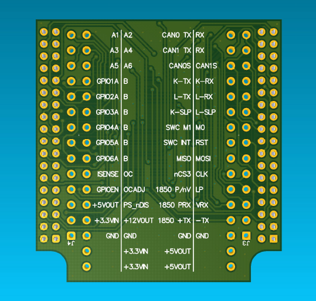

M2 Breakout Board: bring your own board
The Macchina M2 was designed to be modular to give you the option of using your own microcontroller board in place of our Arduino-based processor board. We've built a breakout board to make it easy to connect a Raspberry PI, Edison, Particle, or whatever your favorite microcontroller may be.

We've broken out all of the necessary signals to make it easy to hook up. Below is a rendering of the top of the breakout board showing where each signal is found. See the tables below for further description of how pins work.
At a bare minimum, connect +5VOUT and GND to your microcontroller board, supply the interface board with +3.3V at +3.3VIN, and connect up whatever signals you are looking to interface with (CAN, LIN, etc)

| PCB Left column label | Interface board signal name | Function |
|---|---|---|
| A1 | GPIO1 ANA | Analog input 1 (J5 pin 1) |
| A2 | GPIO2 ANA | Analog input 2 (J5 pin 5) |
| A3 | GPIO3 ANA | Analog input 3 (J5 pin 9) |
| A4 | GPIO4 ANA | Analog input 4 (J5 pin 13) |
| A5 | GPIO5 ANA | Analog input 5 (J5 pin 17) |
| A6 | GPIO6 ANA | Analog input 6 (J5 pin 21) |
| GPIO1A | GPIO1 A | 12V I/O channel 1 (J5 pin 2) |
| GPIO2A | GPIO2 A | 12V I/O channel 2 (J5 pin 6) |
| GPIO3A | GPIO3 A | 12V I/O channel 3 (J5 pin 10) |
| GPIO4A | GPIO4 A | 12V I/O channel 4 (J5 pin 14) |
| GPIO5A | GPIO5 A | 12V I/O channel 5 (J5 pin 18) |
| GPIO6A | GPIO6 A | 12V I/O channel 6 (J5 pin 22) |
| GPIO1-6 B | GPIO1-6 B | Not connected in Release M2 |
| ISENSE | I SENSE 12V | |
| OC | OVER CURRENT | |
| GPIOEN | 12Vio_EN | |
| OCADJ | DAC1 | |
| +5VOUT | +5V | +5V OUT (can supply up to ~3A) |
| PS_nDIS | BUCK_nDIS | |
| +3.3VIN | +3.3V | Need to suppply 3.3V to interface board |
| +12VOUT | VIN | Vehicle battery voltage |
| GND | DGND | Ground |
| PCB Right column label | Interface board signal name | Function |
|---|---|---|
| CAN0 TX | CANTX0 | CAN channel 0 TX |
| CAN0 RX | CANRX0 | CAN channel 0 RX |
| CAN1 TX | CANTX1 | CAN channel 1 TX |
| CAN1 RX | CANRX1 | CAN channel 1 RX |
| CAN0S | HSC_S | CAN channel 0 Silent mode control |
| CAN1S | MSC_S | CAN channel 1 Silent mode control |
| K-TX | 9141 K TX | K-Line or LIN channel 0 TX |
| K-RX | 9141 K RX | K-Line or LIN channel 0 RX |
| L-TX | 9141 L TX | L-Line or LIN channel 1 TX |
| L-RX | 9141 L RX | L-Line or LIN channel 1 RX |
| K-SLP | 9141 K SLP | K-Line/LIN0 sleep control input |
| L-SLP | 9141 L SLP | L-Line/LIN1 sleep control input |
| SWC M1 | SWC M1 | |
| SWC M0 | SWC M0 | |
| SWC INT | SWC nINT | |
| RST | M_nRST | |
| MISO | SPI0 MISO | |
| MOSI | SPI0 MOSI | |
| nCS3 | SPI0_nCS3 | |
| CLK | SPI0 CLK | |
| 1850 P/nV | J1850_PWM_nVPW | |
| LP | J1850 9141 ON | |
| 1850 PRX | J1850_PWM_RX | |
| 1850 VRX | J1850_VPW_RX | |
| 1850 +TX | J1850+_TX | |
| 1850 -TX | J1850-_TX | |
| GND | DGND | Ground |
| +5VOUT | +5V | +5V OUT (can supply up to ~3A) |